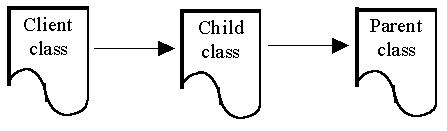

Working with Multiple Files
Most Java artifacts will require a number of
source code files to be prepared and compiled. This can be
accommodated by opening a number of windows and switching between
them, using the Windows menu, as required.
Compiling a source file which has no
dependencies will cause only that file to be compiled and a class
file produced from it. Compiling a source file which is dependent
upon another file, or files, will cause all required compilation
to be performed in order to produce all the class files needed.

For example if Client is dependent upon Child
which is itself dependent upon Parent and assuming that
none of them have been compiled (or more accurately that none of
their class files are present in the working directory). Then
compiling Parent will cause only the Parent to be
submitted and the Parent.class file to be produced. If the
Client were then to be compiled then both the Client
and the Child will be compiled, with any errors reported,
and both class files produced.
Obsolete files are detected and re-compiled
automatically upon recompilation of the client. For example if Parent.java
is edited and saved, a subsequent compilation of Client
would cause Parent to be re-compiled. PFE assists in this
process by ensuring than an opportunity to save all edited files
is given before any compilation is performed.